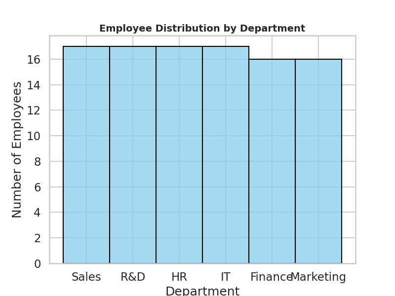

Prepared by ChatGPT • Contact: 22f3001480@ds.study.iitm.ac.in
=== Employee Performance Analysis === Dataset: Randomly generated with 100 employees Frequency count for "R&D" department: 23

import pandas as pd
import numpy as np
import matplotlib.pyplot as plt
EMAIL = "22f3001480@ds.study.iitm.ac.in"
np.random.seed(42)
departments = ["Sales", "R&D", "IT", "Finance", "Operations", "HR", "Marketing"]
regions = ["North America", "Latin America", "Europe", "Africa", "Asia"]
n = 100
df = pd.DataFrame({
"employee_id": [f"EMP{str(i).zfill(3)}" for i in range(1, n+1)],
"department": np.random.choice(departments, n),
"region": np.random.choice(regions, n),
"performance_score": np.random.uniform(60, 100, n).round(2),
"years_experience": np.random.randint(1, 20, n),
"satisfaction_rating": np.random.uniform(1, 5, n).round(1)
})
# Frequency count for R&D
rd_count = (df["department"] == "R&D").sum()
print("Frequency count for R&D department:", rd_count)
plt.figure(figsize=(8,5))
plt.hist(df["department"], bins=len(departments), rwidth=0.8, color="#4F46E5", alpha=0.8)
plt.title("Histogram of Departments")
plt.xlabel("Department")
plt.ylabel("Frequency")
plt.xticks(rotation=45)
plt.tight_layout()
plt.savefig("histogram.png", dpi=200)
plt.close()